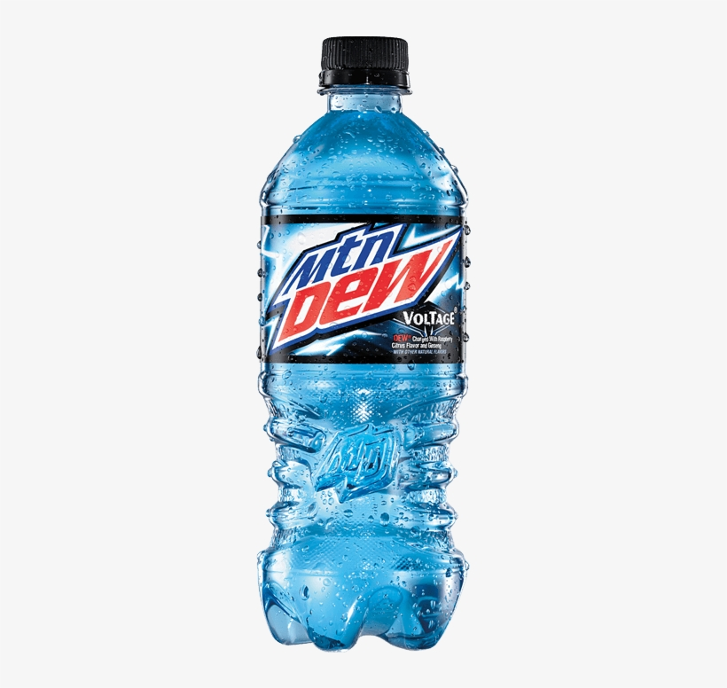

I like the drink Mountain Dew. It has a lot of different flavors to choose from. My favorite flavor is the 'Voltage' flavor, this one has a raspberry flavor.

Mountain Dew was first made in the 1940s in Tenessee. It was a lemon-lime flavored soda that was meant be mixed with liquor. The Pepsi Company purchased the drink in 1964 and changed it be a sweeter standalone soda rather than a mixer.
Here is a link to the Mountain Dew Website. Mountain Dew Website